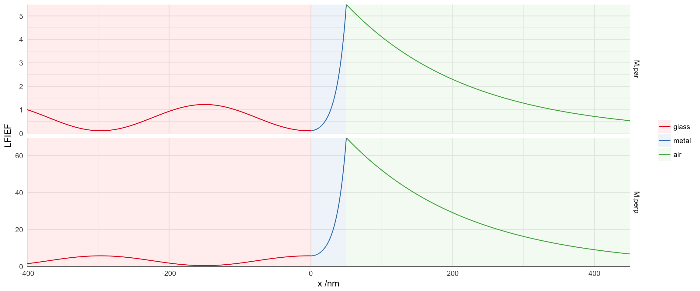

library(planar)
library(ggplot2)
require(reshape2)
require(plyr)We simulate a thin metal layer sandwiched between glass (incident medium) and air, illuminated from the glass side under p-polarisation, at 44 degrees (Kretschmann configuration). The electric field is normalised by the permittivity of each layer to exemplify the continuity of electric displacement (squared, here) across interfaces.
m <- lfief(wavelength=633, angle=44*pi/180, polarisation='p',
thickness=c(0, 50, 0), dmax=400, res=5000,
epsilon=list(1.5^2, -12+1i, 1.0^2),
displacement=TRUE)
m$L1 <- factor(m$L1, labels=c("glass", "metal", "air"))
str(m)## 'data.frame': 12000 obs. of 5 variables:
## $ x : num 0 -0.802 -1.603 -2.405 -3.206 ...
## $ variable: Factor w/ 2 levels "M.par","M.perp": 1 1 1 1 1 1 1 1 1 1 ...
## $ value : num 0.111 0.11 0.11 0.109 0.109 ...
## $ L1 : Factor w/ 3 levels "glass","metal",..: 1 1 1 1 1 1 1 1 1 1 ...
## $ material: Factor w/ 3 levels "n2","metal1",..: 1 1 1 1 1 1 1 1 1 1 ...A strong electric field can be noted, particularly for the perpendicular component, which decays exponentially from the metal-air interface: this is characteristic of the excitation of surface plasmon-polaritons.
limits <- ddply(m, .(L1), summarize,
xmin=min(x), xmax=max(x), ymin=-Inf, ymax=Inf)
ggplot(m) +
facet_grid(variable~., scales="free")+
geom_rect(aes(xmin=xmin, ymin=ymin, xmax=xmax, ymax=ymax,
fill=factor(L1)), data=limits, alpha=0.2) +
geom_path(aes(x, value, colour=factor(L1))) +
scale_x_continuous("x /nm",expand=c(0,0)) +
scale_y_continuous("LFIEF",expand=c(0,0)) +
geom_hline(yintercept=0) +
scale_colour_brewer("", palette="Set1")+
scale_fill_brewer("", palette="Pastel1") +
theme_minimal()